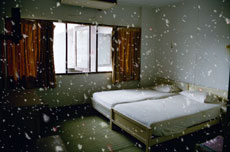

|
EMERALD - MORAKOT

Apichatpong Weerasethakul | Thailand / Japan 2007 | 11 Min. (Loop)
Material: Video
Originalsprache: Thai
Drehbuch: Apichatpong Weerasethakul
Kamera: Apichatpong Weerasethakul
Schnitt: Apichatpong Weerasethakul
Ton: Narathip Tungkaseranee
Mit Sakda Kaewbuadee, Jenjira Pongpas, Nitipong Thinthupthai
Produktion: Apichatpong Weerasethakul
www.kickthemachine.com
Deutsche Erstaufführung
Das Video des Großmeisters des neuen thailändischen Films erzählt die Geschichte vom wirtschaftlichen Aufschwung seines Landes in den 1980er Jahren, den überfüllten Camps mit kambodschanischen Flüchtlingen nach der vietnamesischen Invasion bis zum Kollaps des Finanzwesens in ganz Ostasien. Protagonist ist das Hotel Morakot - eröffnet in den 1980ern und heute verlassen und ruinös – als Zeugnis einer großen Vergangenheit. Eine traumhafte Begehung eines Ortes, der von Erinnerungen gesättigt ist.
Apichatpong Weerasethakul, geb. 1970 in Bangkok. Studierte Architektur (Thailand) und Film und Kunst (Art Institute of Chicago). 1999 Gründung der Filmproduktionsfirma Kick the Machine. Zahlreiche Kurz- und Langfilme, Videoinstallationen und Photographien. 2008 Mitglied der Wettbewerbsjury in Cannes.
Filme (Auswahl): Emerald – Morakot 2008 | Syndromes and a Century 2006 | Ghost of Asia 2005 | Worldly Desires 2005 | Tropical Malady 2004 | Blissfully Yours 2002 | Mysterious Object at Noon 2000
Einzelausstellungen: SCAI The Bathhouse, Tokio 2008 Redcat, Kalifornien 2007
Gruppenausstellungen (Auswahl): Guangdong Museum of Art, China 2008 | KunstFilmBiennale, Köln 2006 | InternationalFilm Festival Rotterdam IFFR 2006 | Liverpool Biennial 2006 | Haus der Kulturen der Welt, Berlin 2005 | Kunstverein München 2005 | Taipei Fine Arts Museum - Taipei Biennial 2005 | RAM Foundation, Rotterdam 2004 | The Japan Foundation Forum 2003 | Tokyo Opera City Art Gallery 2003
zurück
|